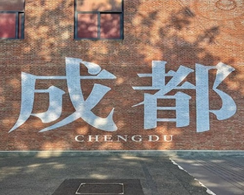
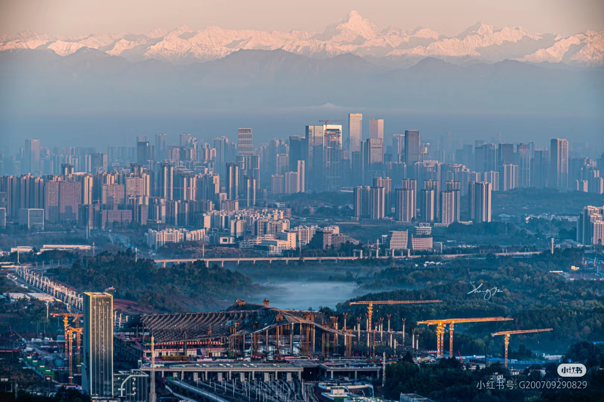

Brief Intriduction About "Chengdu"
Chengdu, the capital of Sichuan Province in southwest China, is a vibrant city known for its rich history, cultural heritage, and modern dynamism. With a history spanning over 3,000 years, it was once the heart of the ancient Shu Kingdom and is often associated with its historical significance in Chinese culture.
Chengdu is called Tianfu Zhi Guo, meaning "The Land of Abundance," due to its exceptional natural resources, fertile land, and favorable climate that have supported agriculture and prosperity for thousands of years.